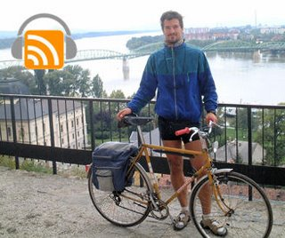

Are you considering an 'active vacation' in Italy such as a bike tour of Tuscany? Then listen to this audio interview with Massimo Ostrouska, a former bicycle tour lead who shares his insights on getting to know Italy on two wheels. Bicycle tour companies mentioned in this podcast are Ciclismo Classico, BackRoads, Bike Riders and Butterfield & Robinson.